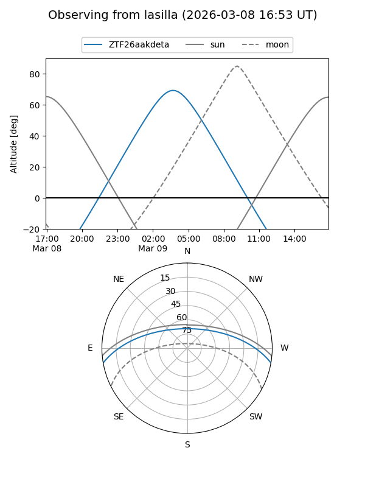
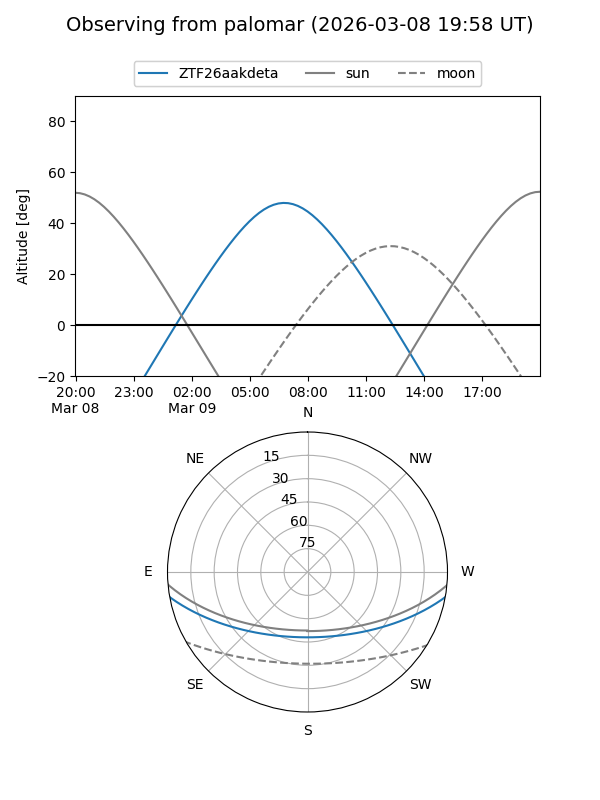

ZTF26aakdeta
Target ZTF26aakdeta at 2026-03-09 07:39
Aliases and brokers:
FINK: link
Lasair: link
ALeRCE: link
alt names
ZTF26aakdeta (ztf,fink_ztf)
Coordinates:
equatorial (ra, dec) = 151.3831,-8.51249
equatorial (HMS+DMS) = 10:05:31.95,-08:30:44.96
galactic (l, b) = (248.5706,+36.29637)
Flags:
Photometry:
last ztfg=19.03
1 ztfg detections
Lightcurve
Visibility


Additional plots